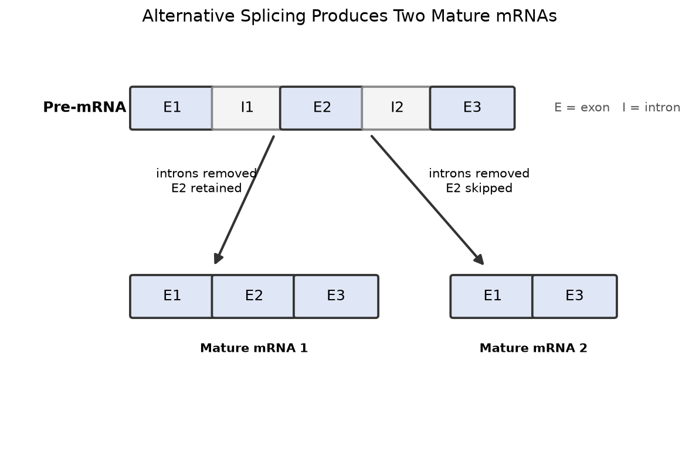

Question
Revise the stem without changing the assessed construct unless the brief is reopened.
Visual stimulus
Bind one governed image to this exact item version and review it in learner context.

The package cannot be submitted while the prompt depends on the missing image.
- Role
- Question stimulus
- Visual purpose
- Model analysis
- Source
- Independently authored deterministic schematic
- Rights state
- Pending independent review
- Answer leakage
- Pending grading review; rejected v2 remains preserved as evidence
Answers
One best answer and three distinct distractor mechanisms are required.
Hints
Order support from a light cue to a more explicit reasoning prompt.
Explanation
Teach the causal chain and correct the likely misconception.
Sources and rights
Attestation records origin and permissions; it is not counsel approval.
Deterministic Cramapple schematic · exact SHA-256 and generator recorded · predecessor v2 rejected for answer leakage · no external source image.
OpenStax Biology 2e · Cell Communication · paraphrase/synthesis · accessed Jun 15, 2026
Authored from the governed brief; no question text used as a seed or adaptation target.
Simulated attachment · ownership confirmed · permission evidence not attached.
No AP Classroom, unreleased exam, Reading, or credential-restricted material used.
Accessibility
Record representations needed for equivalent use.
Checks and submit
Resolve blockers before creating immutable version 3.